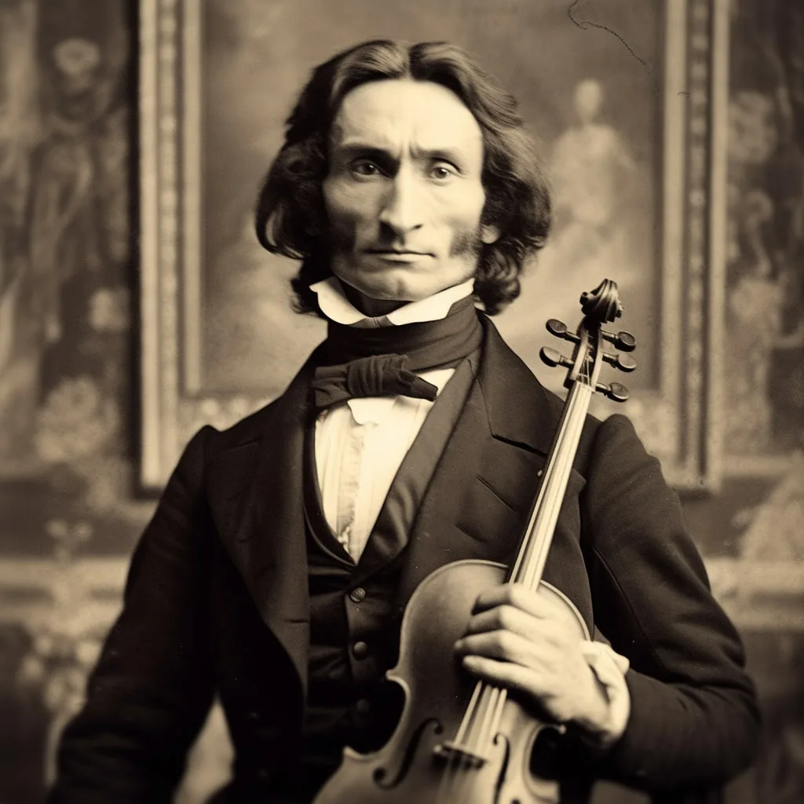

Начало музыкальной карьерыВ подростковом возрасте Никколо Паганини начал выступать перед публикой и давать концерты в разных городах Италии. Его исполнение отличалось необычайной виртуозностью, стремительностью и выразительностью. Слушатели удивлялись тому, насколько сложные музыкальные пассажи он мог исполнять. В 1797 году Паганини отправился в концертную поездку по Северной Италии вместе с отцом. Эти выступления помогли ему получить первый серьёзный опыт и привлечь внимание публики. Музыкант совершенствовал технику, экспериментировал со штрихами, двойными нотами и быстрыми переходами между позициями.  Никколо Паганини — великий итальянский скрипач Музыка, талант и стремление к совершенству |